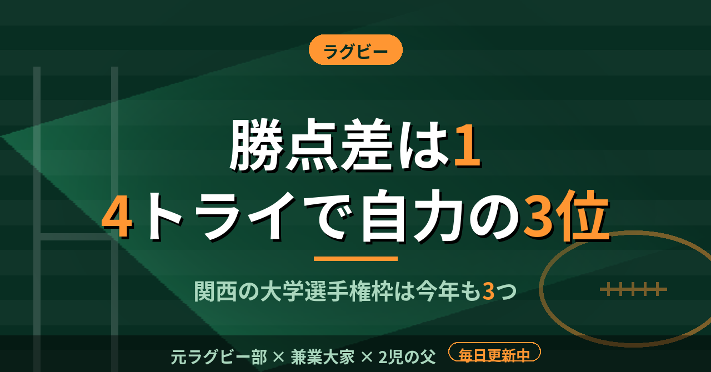

ラグビー2点差で負けて、2点差で勝った。同志社は勝点18の3位で関西Aリーグ最終節へ
11月22日、たけびしスタジアム京都で、同志社大学が京都産業大学に28-26で勝った。9月に近畿大学に24-26で落とした試合と同じ2点差を、今度は勝つ側で終えたことになる。同志社で4年間プレーした僕は、スコアを見たあと、すぐに順位表の勝点を数え直した。
6節を終えて、3位と4位の差は勝点1
ラグビーデータベースの集計では、6節終了時点の順位は、1位天理大学（6戦全勝・勝点26）、2位京都産業大学（4勝2敗・20）、3位同志社大学（4勝2敗・18）、4位近畿大学（4勝2敗・17）だ。5位の関西大学は勝点10で、最終節にボーナス点付きで勝っても15にしか届かない。上位4校の顔ぶれは、この週末で決まった。
同志社は京産大戦で勝点4を積んだが、4トライ以上のボーナス点は付いていない。負けた京産大は7点差以内の1点を拾い、近大は摂南大学に54-21で勝って、ボーナス点込みの5点を足した。1週間前に2あった近大との差は、1に縮んだ。
関西の枠は今年も3つ
前回の記事では、今季の大学選手権の関西枠が前回と同じかどうか確認できていなかった。日本ラグビーフットボール協会が公表した第63回全国大学選手権の概要を読むと、出場は全14チームで、関西大学Aリーグの枠は3つと決まっている。1位は準々決勝から、2位と3位は3回戦からの出場だ。
3回戦は12月13日で、会場の一つは東大阪市花園ラグビー場。準々決勝は12月19日と20日、準決勝は2027年1月2日、決勝は1月10日で、準決勝と決勝は国立競技場で行われる。4位には、この日程表のどこにも入る場所がない。同志社と近大の間にある勝点1が、そのまま全国への線になる。
自力で決める条件は「4トライで勝つ」
最終節は11月28日と29日。同志社は29日に花園で関西学院大学と、近大は28日に関西大学と当たる。関学大はここまで1勝5敗、勝点6だ。
勝点を並べてみる。同志社が4トライ以上で勝てば勝点23。近大はボーナス点付きで勝っても22なので、近大の結果に関係なく3位以内が決まる。ボーナス点なしの勝ちだと22で、近大がボーナス点付きで勝てば並ぶ。関西ラグビーフットボール協会が2021年度に公表した順位決定方式では、2校が勝点で並んだときは直接対決の結果で決める。今年も同じなら、9月に2点差で負けている同志社が下に来る。
負けた場合は、4トライと7点差以内の両方のボーナス点を取っても20までだ。近大が勝てば21以上になり、逆転される。反対に、同志社が4トライで勝ち、京産大が天理大に負ければ、2位に上がる。京産大には22日に勝っているので、並んでも同志社が上だ。
グラウンドの上にいると、見えているのは目の前の1本だけだ。勝点は試合が終わってから表で知る。けれど表の側から見ると、4本目のトライが入るかどうかで、母校の12月が花園の3回戦になるか、シーズンの終わりになるかが分かれる。
29日の花園では、勝ち負けの次に、トライの数を数えるつもりだ。
この記事は note にも掲載しています。